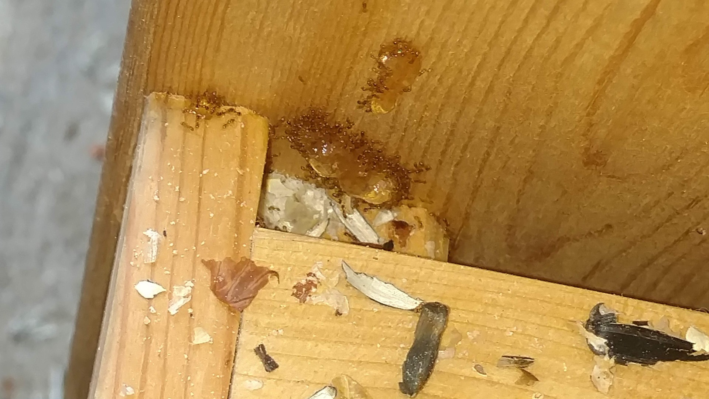
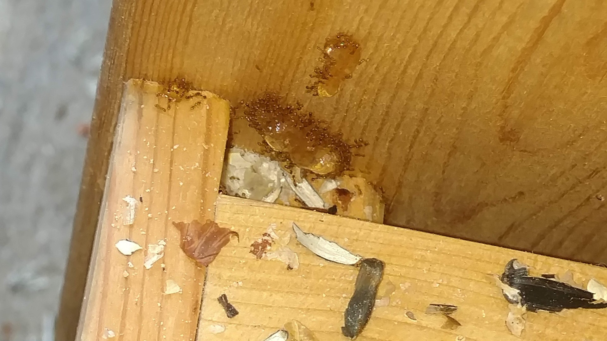
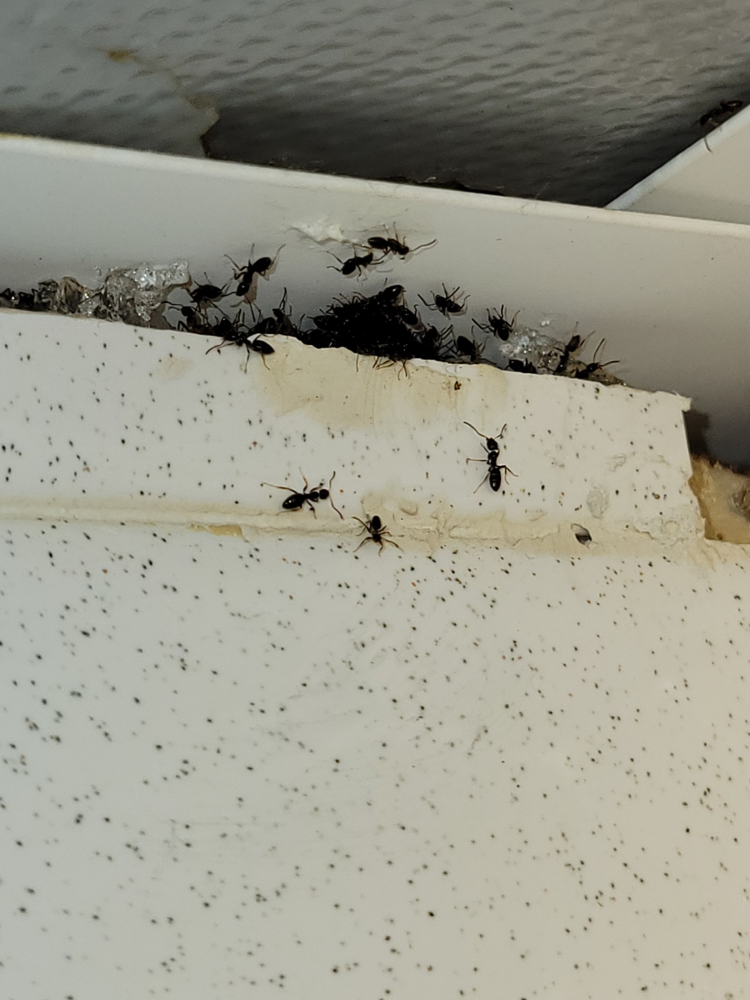
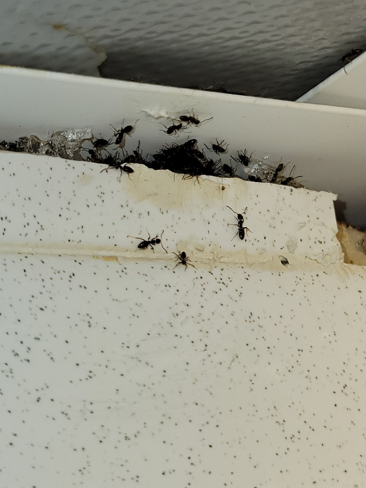

Insects such as ants, bed bugs and German cockroaches may appear harmless at first glance, but they can interfere with your comfort, contaminate your space, pose allergy or bite risks, and for commercial settings, cause regulatory or reputational issues.
Ants are among the most frequent household invaders in Illinois. According to the Illinois Department of Public Health (IDPH), ants consume and contaminate food, build nests near and in structures, and some species can even sting people or pets. Common signs of an ant problem include visible trails of ants inside or outside the building, small mounds or nests in turf or near foundations, and attracted to food or moisture.
Bed bugs (Cimex lectularius) are tiny, elusive pests that feed on human blood during sleep. The University of Illinois Extension explains that, although they are not known to spread disease, they are a serious nuisance, cause anxiety, bites and can be difficult to eliminate.
The Blattella germanica (German cockroach) is one of the most common and difficult indoor pests, especially in apartments, restaurants and multi-unit buildings. The University of Illinois Extension highlights that DIY spray and aerosol products often fail against German cockroaches because of hiding in cracks, rapid reproduction (up to six generations per year), and insecticide resistance.
At A Natural Pest Solution, we deliver safe, effective and environmentally conscious insect-control services for homes and businesses throughout Joliet and the surrounding areas. We identify the specific pest, apply targeted treatment, and help you prevent re-infestation—while keeping your family, pets and the environment in mind.
Below are some real examples of clients dealing with german cockroaches and ants:

 

 

Contact A Natural Pest Solution today for rodent control in Joliet and the surrounding areas!
Call Today For a Free Quote